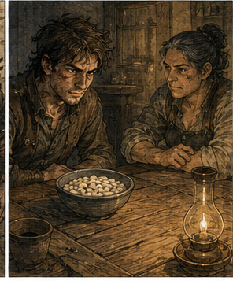
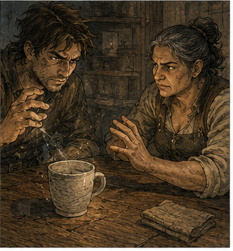

Hessa had beans.

This was worse than anger.
I had spent most of the walk to her rooms constructing possible versions of the conversation. She believed me. She did not believe me. She believed enough to stop teaching me. She believed enough to ask questions I could not answer. She had told somebody. She had found a scholar. She had found a priest. She had found a very large man with a sack.
Instead, she opened the door, looked at my bruised face, and said, "You're late."
"I was robbed yesterday."
"Were you?"
"Technically somebody else was being robbed. Then I became involved."
"That sounds more like you."
She stepped aside.
The three wooden cups were gone from the table. In their place sat a shallow bowl filled with dried white beans, another empty bowl, a clay lamp, and a folded cloth.
I stared at the beans.
Hessa noticed.
"Problem?"
"No."
"You look offended."
"I have complicated feelings about legumes."
"You told me you were fifty-eight years old."
"Mentally."
"And beans frighten you."
"They don't frighten me."
Hessa shut the door. "Sit."
I sat.
That was progress. Three days ago, I would have made a joke about obedience and then sat. The difference was microscopic and probably meaningless, which meant I immediately wanted credit for it.
Hessa took the chair opposite me.
For several breaths she did nothing.
She did not ask about the Chronoclast.
She did not ask about the future.
She did not ask whether I had spent the last few days remembering additional impossible things.
She looked at the bruise along my jaw.
"What happened?"
"A man hit me."
"I had gathered that."
"He was very committed to the traditional method."
"Did you cast?"
"Once."
Her eyes moved from my jaw to my hands.
"Barrier?"
"Yes."
"What did you block?"
"An iron hook."
"With your current Barrier?"
"Not exactly."
That got her attention.
I explained the warehouse. Not all of it. Alden's name stayed out. So did the bells. Hessa had enough impossible information without me adding a young adventurer who made my memory sound like a drunk soldier trying to remember the fourth verse of a tavern song.
I described the hook coming through the broken partition. I described its angle, the man pulling from the other side, and the amount of time I had.
"I couldn't stop it," I said.
"You tried anyway."
"No."
Hessa's expression changed slightly.
I held up one finger.
"I touched the side of it."
"You touched an iron hook with Barrier."
"Briefly."
"How briefly?"
"I don't know."
"Then you don't know what you did."
"I know what happened."
"That is not the same sentence."
I smiled.
She did not.
I stopped smiling.
"The hook moved," I said. "Not much. Enough to miss my head and catch my sleeve instead."
Hessa leaned back.
"What shape?"
"Small plane."
"How small?"
I showed her with thumb and forefinger.
Her eyebrows rose.
"That is smaller than the one you put in the cup."

"Yes."
"And you formed it while somebody was trying to put iron through your skull."
"Wall."
"What?"
"He was trying to put iron through the wall. My skull was an incidental complication."
"Greg."
"About that size."
She looked at my fingers again.
Then she reached for the bowl of beans.
Of course she did.
"What are these for?" I asked.
"Teaching."
"That is a category, not an answer."
"It is the answer you are getting."
She took one bean and placed it on the table between us.
"Move it."
I looked at her.
"With Barrier."
"I assumed."
"Did you?"
I hated teachers.
I gathered mana.
The sensation was still wrong. That had become less surprising, which was its own kind of danger. The first days, every attempt had screamed at me that I was wearing somebody else's channels. Now the pathways were beginning to become familiar. Not good. Not strong. Familiar. That made it easier to forget how little they could actually carry.
I formed the smallest plane I could manage beside the bean.
The structure wanted to become something I recognized.
Flat. Anchored. Resistant.
Barrier.
I pressed.
The bean skittered three inches and rolled off the table.
Hessa watched it fall.
"Again."
I bent to pick it up.
"No."
I froze.
"Use another."
"There are forty beans."
"Then we can afford your mistakes."
I looked at the bowl.
"That is an irresponsible attitude toward beans."
"Again."
Second bean.
This time I put the plane closer.
Too close.
The Barrier formed partly through the bean's edge, failed to stabilize, and collapsed before it fully existed.
A needle of pain ran behind my right eye.
Hessa saw my face.
"What happened?"
"Placement."
"Meaning?"
"I intersected the target."
"You can put Barrier inside a cup but not beside a bean."
"The cup is larger."
"Excellent. You have discovered size."
"I knew about size."
"Your spell didn't."
I stared at her.
She slid another bean onto the table.
I tried again.
The third moved.
The fourth did not.
The fifth jumped hard enough to strike the bowl.
The sixth rolled in a beautiful straight line, which pleased me more than it should have.
The seventh taught me nothing.
The eighth taught me that the seventh had probably taught me something and I had been too pleased with the sixth to notice.
I stopped.
Hessa stopped reaching for beans.
"What?"
"The anchor."
"What about it?"
I looked at the table.
Barrier had always been easiest to teach as a wall because walls were intuitive. Put a thing here. Tell the world no.
That was not how I thought about it anymore. It had not been for decades.
But I was not decades old in the part of me that mattered to the spell.
I touched the tabletop.
"When I pushed the bean, I anchored against the room."
Hessa waited.
I could feel the old answer behind my teeth. There were names for this. Later names. Better diagrams. At least I thought there were. A lecture hall with blue chalk flashed through my memory, followed by a woman with silver rings on every finger arguing that half the terminology was fraudulent.
I could not remember her name.
I could remember that she had been right about something.
Useful.
"I think I'm doing too much," I said.
"That is not a new discovery."
"No. Magically."
"Also not new."
I ignored her.
"The spell is holding a position it doesn't need to hold. I'm making a wall for a job that needs a tap."
Hessa's eyes narrowed.
"What would you change?"
"I don't know."
"Good."
I looked up.
She meant it.
Not as mockery.
Good.
I had said I did not know.
Something in my chest disliked that. Something else, quieter and newer, was beginning to enjoy it.
Hessa pushed the bowl toward me.
"Find out."
I took a bean.
This time I did not cast.
I turned it between my fingers.
"What does Barrier need to be Barrier?"
Hessa sighed.
"That is the wrong question."
I looked at her.
She tapped the bean.
"What does this exercise need?"
I almost answered immediately.
Then I understood why she had asked.
I had done it again.
Given a bean and a table, I had tried to solve Barrier.
Not move the bean.
Barrier.
The whole spell. Its architecture. Its history. Its assumptions. Every possible future use waiting behind the stupid white thing between my fingers.
I put the bean down.
"It needs the bean to move."
"How far?"
"You didn't say."
"Then ask."
"How far?"
"One finger."
I stared at her.
"That's all?"
"One finger."
"You have been letting me throw them across the table."
"I have been watching you decide what the problem was."
That was unfair.
It was also excellent.
I hated that more.
I gathered mana again.
One finger.
Not a wall.
Not a defense.
Not a theory.
A movement.
I formed the plane close to the bean and let it exist for as little time as I could manage.
The Barrier flickered.
The bean clicked sideways.
About two fingers.
I blinked.
The mana cost had been tiny.
Not nothing. Nothing was free. But tiny compared with holding the structure long enough to feel stable.
Hessa's gaze sharpened.
"Again."
I did.
Too weak.
The Barrier vanished without moving the bean.
Again.
Too close. Collapse.
Again.
The bean moved half a finger.
Again.
One and a half.
My headache remained a pressure instead of becoming a spike.
That was interesting.
Very interesting.
I forgot Hessa for perhaps thirty seconds.
Duration.
I had been shortening duration because I wanted lower cost. Obvious. Basic. Except there was a difference between a short Barrier and a Barrier that never intended to remain.
I knew that difference.
I thought I knew that difference.
Did I?
Old Greg could hold layered defenses across moving people while changing them under impact. Old Greg had done things with persistence and termination that current me could not reproduce if somebody gave me a month and a second brain.
But this was not that.
This was pathetic.
Tiny.
A bean.
My pulse quickened.
"Again," I said.
Hessa reached across the table and covered the bowl with the cloth.
I looked at her hand.
"What are you doing?"
"Stopping."
"I've barely started."
"You've cast nineteen times."
"That cannot be right."
"It is."
I counted backward.
I lost track at twelve.
That was concerning.
"I feel fine."
"No, you feel interested."
"Those are compatible states."
"Not for you."
I leaned back.
The pressure behind my eye had spread toward my temple.
Fine.
She had a point.
I disliked points when other people had them.
Hessa folded her arms.
"Tell me what you learned."
"Brief structures cost less."
"Do they?"
I paused.
"Mine did."
"Today."
"Yes."
"With this shape."
"Yes."
"At this size."
"Yes."
"Against a bean."
I frowned.
"Yes."
"Good."
There it was again. Know. Think. Check.
I knew what had happened. I thought I knew why. I needed to test whether the explanation survived anything more demanding than legumes.
I said it aloud.
Hessa nodded once.
Then she asked, "What did you expect?"
That was harder.
"I expected the cost to fall."
"Why?"
"Because it should."
"Greg."
"Because I remember it."
Her expression went still.
There was the Chronoclast between us again.
Not named.
Not needed.
"I remember very short structures being cheap," I said. "Cheap enough that I used them constantly."
"At fifty-eight."
"Before that."
"How long before?"
I opened my mouth.
Nothing useful arrived.
A battlefield.
Rain.
A Barrier no larger than a thumbnail appearing against the flat of a spearhead.
A boot sliding where it should have planted.
Someone laughing.
Blood on yellow grass.
I knew the technique.
I did not know when I had learned it.
"Years," I said.
"That is not an answer."
"It's the one I have."
Hessa studied me.
Then she uncovered the bowl.
I reached for a bean.
She slapped my hand.
"Ow."
"Not today."
"You just uncovered them."
"To count."
She began moving beans from one bowl to the other.
I watched.
"You're really counting them."
"Yes."
"Why?"
"Because I want to know how many times you cast."
"You could have counted while I was doing it."
"I did."
"Then why count again?"
"Because unlike you, I check."
I considered stealing a bean.
She looked at me.
I left the beans alone.
"Are you going to keep teaching me?" I asked.
Her hands stopped.
There it was.
The actual reason I had come.
Everything else had been easier.
Hessa set the last bean into the second bowl.
"Yes."
I had prepared for several answers.
That one hit harder than expected.
I nodded.
"Under conditions," she said.
Of course.
"What conditions?"
"You tell me when something you remember conflicts with what your body does."
"Fine."
"You tell me before you test anything dangerous."
"Define dangerous."
"No."
"That seems structurally weak."
"It is intentionally broad."
I sighed.
She continued.
"You do not use me to prove your future right."
"I don't do that."
Hessa looked at me.
"Frequently."
"I do it less now."
"That is not the same sentence."
I rubbed my temple.
"What else?"
"You stop when I tell you to stop."
"Within reason."
"No."
"Hessa."
"No."
I considered the problem.
She waited.
"Fine."
"Say it properly."
"I will stop when you tell me to stop."
"Good."
"I reserve the right to complain."
"I assumed."
I smiled.
This time she almost did.
Almost.
Then she pointed at my bruised jaw.
"And if you are going to keep doing guild work, I want to know when you cast under pressure."
"Why?"
"Because you formed something yesterday that you could not reliably form here three days ago."
I sat a little straighter.
"I noticed."
"Of course you noticed."
"Pressure can improve access."
"Or destroy control."
"Both."
"Yes."
That answer pleased me. Two things were true at once. Those were usually the interesting problems.
I looked at the covered beans.
"Can I ask you something?"
"You usually do."
"What do they teach about Barrier now?"
Hessa's face changed.
Not much.
Enough.
"Now?"
I had made the mistake before I finished the sentence.
Current Greg would have said here.
Old Greg said now.
I corrected.
"At the guild schools. Basic structure."
"You were taught Barrier."
"Badly."
"According to you."
"According to the number of times I got hit."
"That may have been the student."
"Unlikely."
Hessa ignored that.
"The common beginner form is fixed-plane anchoring. Broad enough to visualize, simple boundary, external reference. You know this."
"I know the form."
"Then what are you asking?"
"Why they teach it that way."
"Because it is stable."
I waited.
She waited back.
"That's it?"
"Do you need a mystical answer?"
"No. I was hoping for a more interesting one."
"Stable is interesting when the alternative is a student collapsing a spell inside their own hand."
"Fair."
"It is easy to see when it fails. Easy to correct. Easy to compare between students. It teaches feed, shape, boundary, anchor, release."
That was a better answer than the one I remembered.
Or perhaps I had simply been a worse student than I remembered.
"Do they teach transient forms?"
"Not to beginners."
"Why?"
"Because beginners are bad at them."
"That is circular."
"No. A fixed form gives them time to observe what they made. A transient form disappears before an inexperienced caster can tell which part failed."
I looked at the bean.
That was annoyingly sensible.
Later schools had taught quick structures earlier. I remembered that. Probably. But later schools also had better measurement tools, better instructors, standardized exercises, and at least three pieces of equipment that did not exist yet. Maybe. I knew two of them did not. The third might have existed under another name. I had been about to judge an older teaching method by infrastructure it did not possess. Again.
"That makes sense," I said.
Hessa stared at me.
"What?"
"You agreed."
"I agree with people constantly."
"No."
"I agree internally."
"That does not count."
"It should."
She stood.
Lesson over.
I stood too.
My head felt better than it had any right to after nineteen casts.
That bothered me.
Which meant I wanted to do twenty more.
I did not.
Hessa noticed that too.
"Tomorrow," she said.
"I have training."
"With Jorren?"
"And someone else."
Her eyes flicked to me.
"Someone else."
"Alden."
I had not intended to say the name.
The room did not change.
No bells.
No half-remembered verse.
Just Hessa waiting.
"Marr," I added.
That changed something.
Very small.
Her mouth tightened.
I noticed because I was looking for reactions now.
"Hessa?"
"What?"
"You know him?"
"No."
Too quick.
Not necessarily a lie.
I had learned that lesson recently.
Pattern was not proof.
Still.
"You share a name."
"Many people share names."
"Do they?"
"Yes, Greg."
"How many Marrs do you know?"
"Enough to know this conversation is over."
Interesting.
I almost pushed.
Old Greg had several ways.
A joke. A false assumption. A deliberately wrong relationship she would correct. Silence held long enough to make the other person fill it.
I knew where the pressure points were.
Or thought I did.
Hessa had just agreed to keep teaching me after I told her the most impossible thing I knew.
I let the question go.
That surprised both of us.
"Third bell tomorrow?" she asked.
"Earlier."
"Good."
I reached the door.
"Greg."
I looked back.
"Do not experiment with the short Barrier while fighting."
"I wasn't planning to."
"You are lying."
"I am predicting poorly."
"Do not."
I opened the door.
Outside, the morning street was bright and already busy. A cart rolled past with three barrels lashed badly enough that I spent six seconds redesigning the knots in my head.
Then I thought about the hook.
A full Barrier would have failed.
A tiny one had not stopped anything.
It had changed something already moving.
Less work.
Different problem.
My mind began building tests.
Bean.
Pebble.
Dropped coin.
Thrown coin.
Wooden bead.
Moving stick.
Too fast.
Slow first.
Different angles.
No.
One variable.
I stopped walking.
Hessa's door opened behind me.
"No."
I turned.
She stood in the doorway.
"I didn't say anything."
"You stopped walking."
"I was thinking."
"Go home."
"I am not going home."
"Where are you going?"
"The guild."
"Why?"
I remembered Alden asking for training.
Jorren's expression when I had spent half a morning improving everybody except myself.
The South Canal sacks sitting somewhere under guild authority, unidentified and irritating.
Antonius, who would eventually hear about anything valuable if the city contained enough merchants.
Alden, who had learned to wait once and immediately wanted another lesson.
My own body, which still moved half a beat behind decisions it remembered making faster.
And nineteen beans.
"I have things to do."
Hessa looked at me for a long moment.
"One thing at a time."
"That is an unreasonable number of things."
"Greg."
"Fine."
I stepped into the street.
One thing.
I made it almost half a block before I began wondering whether a Barrier had to be anchored to the room at all.
That was not an experiment.
It was only a question.
Questions were free.
Mostly.